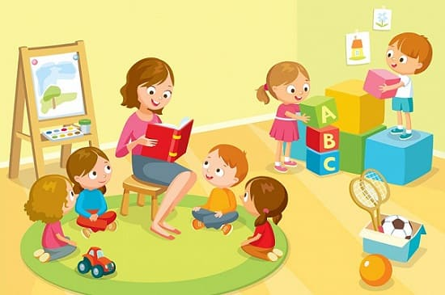
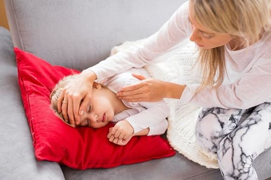
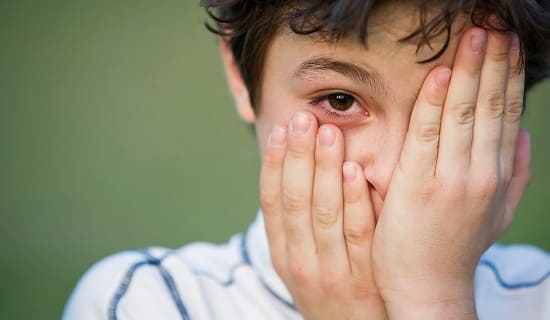
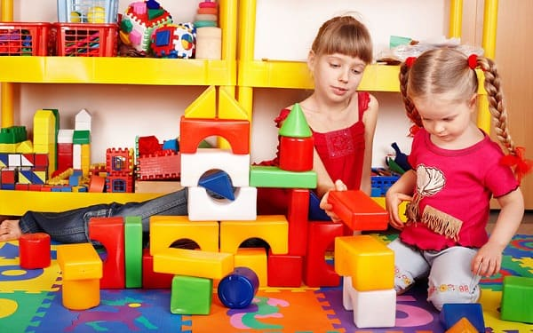

Как только ребенок начнет ходить в детский сад, ожидайте, что он начнет чаще болеть. Микробы — это одна из немногих вещей, которыми дети охотно делятся, и исследования показали, что, посещая садик, дети переносят больше респираторных и кишечных инфекций. Родители чаще все сталкиваются с двумя основными вопросами:
• Что я могу сделать, чтобы уберечь моего ребенка от заболеваний при посещении детского садика?
• Когда мой ребенок слишком болен, чтобы пойти в детский сад?
Количество играет роль. Чем с меньшим количеством детей ваш младенец будет контактировать, тем ниже его шансы подхватить инфекцию. Слишком много детей в слишком тесном помещении — прекрасные условия для размножения микробов. Убедитесь, что помещения хорошо проветриваются, а дети достаточно гуляют на улице. Это уменьшает возможности передачи микробов.
Оцените гигиенические мероприятия в детском саду. Должна проводиться плановая дезинфекция. Попросите показать вам средства для дезинфекции. Убедитесь, что в садике есть все для переодевания и грязные подгузники хранятся отдельно. Убедитесь, что проводится полноценная ежедневная уборка и персонал соблюдает правила личной гигиены. Спросите, что они делают, чтобы не допустить в группы потенциально «заразных» детей. Убедитесь, что для посещения группы после болезни требуется справка от врача, что ребенок не заразен.
Кормите ребенка продуктами, способствующими повышению иммунитета. Лучшие продукты для усиления иммунитета вашего ребенка:
• продукты, содержащие омега-3 жирные кислоты: рыба (особенно дикий лосось), добавки с рыбьим жиром и льняное масло;
• продукты, богатые витамином С: цитрусовые, гуава, киви, папайя, земляника, томатная паста;
• продукты, богатые витамином Е: цельные злаки, арахисовое масло, зеленые листовые овощи, батат, ореховые масла;
• повышающие иммунитет специи: имбирь, корица и куркума.
Проверьте меню в детском саду. Предложите им давать детям продукты, укрепляющие, а не истощающие иммунитет. Избыточное количество подсластителей (добавление сахара или кукурузного сиропа, обогащенного глюкозой) может снижать иммунитет ребенка. Учите ребенка прикрывать нос и рот при кашле и чихании. Покажите и расскажите ребенку, как — и почему — важно прикрывать рот и нос, когда он чихает или кашляет: «Когда ты чихаешь или кашляешь, крошечные капельки слизи, как маленькие воздушные шарики, разносят микробов из твоего горла и носа, и другие дети могут вдохнуть их и заболеть. Покажите ему, как прикрываться локтем или предплечьем. Это лучше, чем чихать и кашлять, прикрываясь ладонью (которой потом берется за все вокруг, распространяя микробы).

Следите за своевременным прохождением иммунизаций и медосмотров. Убедитесь, что ваш ребенок привит по возрасту. Если сомневаетесь, позвоните своему врачу, чтобы уточнить. Во время плановых осмотров расспросите врача о наличии каких-либо сезонных вспышек заболеваний и какие дополнительные меры предосторожности можно попросить предпринять персонал детского сада. |
ДОЛЖЕН ЛИ ВАШ РЕБЕНОК ОСТАТЬСЯ ДОМА?
Как определить, должен ли ваш заболевший ребенок остаться дома или может пойти в садик? Вот самые частые состояния, о которых задают вопросы:
Лихорадка. Любое повышение температуры до 37,8°С обычно является показателем наличия заболевания. Прибавьте то, что лихорадящий ребёнок, скорее всего, нуждается в дополнительной нежности и заботе любящих родителей, которую не может, предоставить персонал детского сада.; Общее правило при лихорадках гласит, что температура должна оставаться нормальной без приема жаропонижающих средств на протяжении не менее чем 24 часа, до того, как ребенка можно отправить в детский сад.
ОРЗ. ОРЗ наиболее опасны в первые несколько дней, когда слизь прозрачная и жидкая. Дети остаются в некоторой степени «заразными» до тех пор, пока насморк не прекратится. Но невозможно держать ребенка дома по две недели каждый раз, как он подхватит ОРЗ. Очевидное наблюдение о детских садах, что умеренные ОРЗ всегда сопровождают детей. Решая, оставить ли ребенка дома или отправить в садик, основывайтесь на том, насколько больным он себя чувствует. Вот некоторые общие принципы, которыми стоит руководствоваться: если ребенок весел и играет, а насморк и кашель умеренные, вполне уместно отвести его в садик.
С другой стороны, если у него лихорадка и он вообще плохо себя чувствует, его следует оставить дома, где вы сможете обеспечить дополнительную заботу, в которой он нуждается. Не имеет никакого значения, какого цвета сопли — зеленые или прозрачные: и те и те являются результатом болезни. Некоторые садики тем не менее не допускают детей с «зелеными» соплями в группы. Но прежде чем вы перепланируете весь свои день только из-за того, какого цвета содержимое носа вашего ребенка, вспомните наш совет о промывании носа: больше всего вязкой слизи в носу утром, так как выделения собирались там всю ночь. Промойте ребенку нос или сделайте паровую ингаляцию и затем еще раз оцените выделения из носа. Если оставшиеся выделения прозрачны, а ребенок чувствует себя хорошо, ему не нужно оставаться дома.

СОВЕТ ДОКТОРОВ СИРС НЕ ВСЯКИЕ КАШЕЛЬ И ЧИХАНИЕ СВИДЕТЕЛЬСТВ ОБ ОРЗ (ОРВИ) Кашель и чихание могут быть связаны с аллергией, и тогда они однозначно не представляют опасности для детей. Вот как можно отличить аллергию от ОРВИ: ребенок с аллергией чихает, у него прозрачное отделяемое из носа, нет лихорадки: и он не выглядит больным. У ребенка с ОРВИ из носа идет густая слизь, может быть небольшая лихорадка и нездоровый внешний вид. |
Кашель. Большинство кашлей являются болезнями, из-за которых нужно-остаться-дома-и-не-ходить-в-садик. Кашель обычно больше беспокоит ребенка ночью. Некоторые ОРВИ (ОРЗ) сопровождаются неприятным сухим кашлем, который сохраняется в течение нескольких недель, но в этом случае ОРЗ уже опасности не представляют, так что как насморк прошел, и ваш ребенок хорошо себя чувствует, он может посещать детский сад. Если кашель сопровождается повышением температуры и обильными зелеными соплями, а ребенок чувствует себя и выглядит больным, он должен остаться дома и нуждается в медицинской помощи. Как только лихорадка спадет, и ребенок почувствует себя лучше, он может идти в садик.
Отит. Если отит не сопровождается лихорадкой, кашлем и насморком, то обычно вы можете отправить ребенка в садик, как только он почувствует себя лучше и будет выглядеть соответственно. Отиты обычно следуют за ОРВИ, и к тому времени, как микроорганизмы доберутся до среднего уха, опасности для инфицирования других детей уже нет.
Выделения из глаз. Иногда в садиках отказываются принимать детей с выделениями из глаз. Следует знать, что в первые шесть месяцев жизни выделения из глаз, наиболее вероятно, обусловлены закупоркой слезного протока. Водянистые выделения из глаз при аллергии также не представляют опасности для других детей. Густое отделяемое, не сопровождающееся покраснением глаз, обычно бывает при воспалении носовых пазух. В этом случае, если ребенок достаточно хорошо себя чувствует, он может посещать садик, взяв справку от врача. Если белки глаз покраснели и есть отделяемое из глаз, то, возможно, это конъюнктивит, и в таком случае ребенок представляет опасность для окружающих (он «заразен»). Ребенок не должен ходить в садик, пока не получит надлежащего лечения. Американская академия педиатрии считает, что ребенок может идти в садик, только будет начато адекватное лечение конъюнктивита. Возможно, этого потребуется справка от врача.

СОВЕТ ДОКТОРОВ СИРС: ЛИЦО ВСЕ РАССКАЖЕТ Матери используют термин «осунувшийся» для описания внешнего вида больного ребенка. Вы не найдете этого определения ни в одной медицинской книге, но это общепринятое у матерей описание ребенка, который нуждается в нежной домашней заботе и не должен идти в школу или садик. Постоянно осунувшееся лицо означает, что ОРВИ (ОРЗ) развилась в синусит и требуется медицинская помощь. |
Ангины. Две самые заразные причины ангины: герпес и стрептококк. В обеих этих ситуациях считайте с его ребенка «заразным», пока температура не будет нормальной хотя бы на протяжении одного дня.
Кишечные инфекции. Микробы, вызывающие кишечные инфекции просто бич детских садов. Если у вашего ребенка частый, водянистый нос со слизью или прожилками крови, это верный признак того, что он может заразить других, особенно если понос сопровождается лихорадкой и рвотой. Ребенок должен оставаться дома до тех пор, пока:
• не спадет температура;
• не восстановится водный баланс, и ребенок не перестанет выглядеть больным;
• не нормализуется стул: он должен стать не водянистым, не пенистым и без прожилок крови.
Во время выздоровления после гастроэнтерита будьте готовы к тому, что стул у ребенка будет чаще обычного на протяжении нескольких недель, пока восстановится слизистая кишечника. Это так называемый период реконвалесценции после кишечной инфекции, когда ваш ребенок уже не является источником инфекции и может посещать детский сад.
Головные вши. Большинство школьных и садиковских медсестер излишне «педантичны» в этом вопросе и могут запретить вашему ребенку посещать детский коллектив, пока вы не выберете всех гнид. Комиссия по инфекционным заболеваниям Американской академии педиатрии не поощряет политику «без гнид» в школах и садиках, так как, хотя головные вши очень неприятны и легко передаются от ребенка к ребенку, они не являются переносчиками болезней.
Импетиго (пиодермия). Импетиго — инфекция кожи, распространенная среди дошкольников. Если естественный кожный барьер для микробов нарушен (из-за раздражена пореза, царапины или укуса), бактерии, например, стафилококки и стрептококки, проникают в поврежденную кожу, вызывая образование пузырей размером около 2 см с желтым гнойным содержимым. Если сыпь умеренная, лечится мазью с антибиотиком и закрыта повязкой, ребенок может ходить в садик. Убедитесь, что достаточно коротко постригли его ногти и объяснили, я нельзя прикасаться к поражен н г местам или расчесывать их. Если сыпь захватывает настолько большие участки, что их невозможно закрыть повязкой, разумнее оставить ребенка хотя бы в течение 48 часов после начала лечения антибиотиками.

Здоровье ребенка от докторов Сирс / Сирс У. и др.